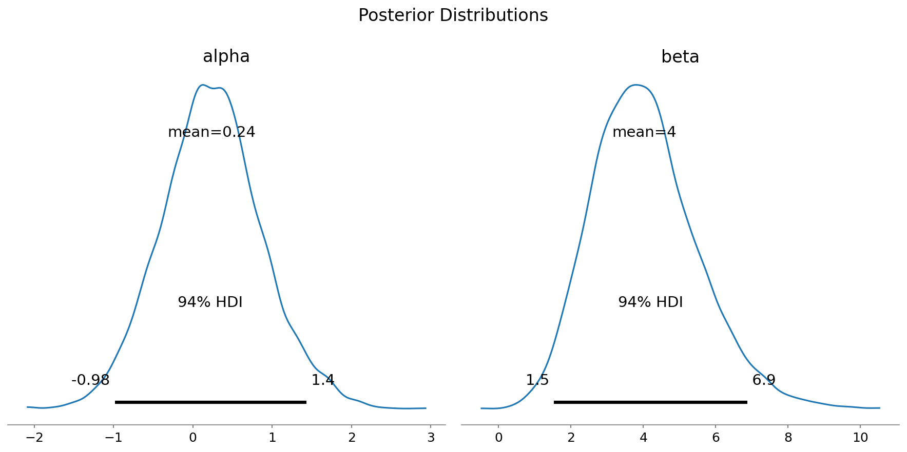

Getting Started with PyMC v5
Data Umbrella Tutorial
PyMC Labs
Getting Started with PyMC v5
üêç + üìä + ü߆ = PyMC
Data Umbrella Tutorial
Christopher Fonnesbeck
PyMC Labs
What We’ll Learn Today
- ü߆ Bayesian Thinking - Understanding uncertainty
- üìä Data Analysis - Real-world examples
- üîß Practical Skills - Building real models
- üöÄ Best Practices - Avoiding pitfalls
What is PyMC?
üêç + üìä + ü߆ = PyMC
Python + Statistics + Probabilistic Thinking
Why Bayesian Modeling?
üìà Traditional Approach
- Point estimates
- p-values
- Confidence intervals*
- Null hypothesis testing
üéØ Bayesian Approach
- Full distributions
- Probability statements
- Credible intervals
- Direct inference
Real-World Applications
üè• Healthcare - Clinical trial design - Drug dosing optimization
- Epidemiological modeling
üߨ Science - Parameter estimation - Model comparison - Experimental design
üí∞ Finance - Risk modeling - Portfolio optimization - Credit scoring
üì± Tech - A/B testing - Recommendation systems - Anomaly detection
üì¶ Installation & Setup
Let’s get you up and running!
üöÄ Recommended Installation
conda install -c conda-forge pymc
(conda-forge is the official recommended method)
✅ Best dependency management
✅ Includes ArviZ automatically
✅ Most stable installation
Sampling Backends & Libraries
üîß PyTensor (Default) - CPU-based, most stable - Works everywhere
- All PyMC features supported
⚡ JAX + NumPyro - GPU/TPU acceleration - conda install numpyro - Some limitations
üöÄ Nutpie - Rust + Numba performance - conda install -c conda-forge nutpie - CPU-optimized NUTS
⚫ BlackJAX - JAX-based samplers - conda install blackjax - Advanced MCMC methods
✅ Test Your Installation
import pymc as pm
print(f"PyMC version: {pm.__version__}")
import arviz as az
print(f"ArviZ version: {az.__version__}")
# Quick test
x = pm.Normal.dist(mu=0, sigma=1)
print(f"Test sample: {pm.draw(x, draws=3)}")üéâ If this runs, you‚Äôre ready!
üõ†Ô∏è Development Setup
üìì Jupyter Notebooks
Recommended for learning
- ✅ Interactive exploration
- ✅ Immediate plot display
- ✅ Great for tutorials
üÜö VS Code + Jupyter
Best of both worlds
- ✅ Code completion
- ✅ Git integration
- ✅ Notebook support
üîß Troubleshooting Common Issues
üí• Import Errors
⚠️ Windows g++ Compiler Warning
Fixes severe performance degradation
üñ•Ô∏è Platform Notes - Mac M1/M2: Use conda-forge only
- Linux: Generally smooth
- Colab: May need runtime restart
üîç Need Help? → discourse.pymc.io
ü߆ PyMC Fundamentals
The building blocks of Bayesian models
The Model Container
üì¶
Random Variables & Distributions
Distribution Zoo ü¶Å
Observed Data
-
üéØ
observed=datamakes it a likelihood - üìä Data shape must match distribution
- üîó Links parameters to your actual data
- ⚡ This is where Bayes’ theorem happens!
üìä Data Handling Pitfalls
❌ Wrong: Pandas inside model
✅ Correct: Prepare data first
üîß Key Patterns: - Complete pandas operations outside model context - Convert to numpy arrays before entering model - Use pm.Data() for data that might change - Use pt.where() for missing data (JAX/NumPyro compatible)
The Bayesian Recipe
Prior × Likelihood = Posterior
PyMC ❤️ ArviZ Integration
- Model specification
- MCMC sampling
- Prior/posterior predictive
- Model comparison
- Visualization
- Diagnostics
- Model checking
- Summary statistics
Seamless workflow: PyMC → InferenceData → ArviZ
üèóÔ∏è Building Your First Model
From data to insights with real examples
üß™ The Bioassay Problem
How does drug dose affect mortality in lab animals?
Classic dose-response modeling problem
Building the Model
# The data
dose = np.array([-0.86, -0.3, -0.05, 0.73])
n_animals = np.array([5, 5, 5, 5])
n_deaths = np.array([0, 1, 3, 5])
with pm.Model() as bioassay_model:
# Priors for intercept and slope
alpha = pm.Normal('alpha', mu=0, sigma=2.5)
beta = pm.Normal('beta', mu=0, sigma=2.5)
# Logistic regression model
theta = pm.invlogit(alpha + beta * dose)
# Binomial likelihood
deaths = pm.Binomial('deaths', n=n_animals, p=theta, observed=n_deaths)⚠️ Common Modeling Errors
<code>ValueError: Input dimension mis-match</code><br>
Matrix vs element-wise operations<br>
Explicit shape specification neededMixing <code>shape</code> and <code>dims</code><br>
Inconsistent coordinate systems<br>
Check tensor shapes explicitlyPrior Predictive Check
Sampling the Posterior
with bioassay_model:
trace = pm.sample(2000, tune=1000, chains=4, random_seed=42)
# PyMC automatically:
# ✓ Chose NUTS sampler ✓ Tuned parameters
# ✓ Ran 4 parallel chains ✓ Checked convergence⚡ Modern MCMC is (mostly) automatic! ⚡
Trace Plots: Checking Convergence

Posterior Distributions
Parameter Relationships
Model Summary
mean sd hdi_3% hdi_97% mcse_mean mcse_sd ess_bulk ess_tail r_hat
alpha 0.241 0.634 -0.985 1.430 0.010 0.008 4266.0 4089.0 1.0
beta 4.034 1.447 1.532 6.869 0.022 0.018 5094.0 4724.0 1.0Posterior Predictive Check
Making Predictions
# Predict mortality at new doses
new_doses = np.array([-1.0, 0.0, 1.0])
with bioassay_model:
pm.set_data({'dose': new_doses})
posterior_pred = pm.sample_posterior_predictive(trace)
# Get prediction intervals
pred_mortality = posterior_pred.posterior_predictive['deaths']üîÆ Full uncertainty quantification for free!
⚠️ Common Pitfalls & Solutions
Avoiding the traps that catch beginners
Convergence Diagnostics
üìà R-hat < 1.01
Chains have converged
üìä ESS > 400
Enough effective samples
⚠️ Zero Divergences
No numerical issues
üîó Good Mixing
Fuzzy caterpillars in traces
The Dreaded Divergences üí•
“There were 47 divergences after tuning…”
- üö® NUTS sampler had numerical problems
- üìä Your results may be biased
- üîç Something is wrong with your model
- ⚡ Don’t trust the posterior estimates
Diagnosing Sampling Problems
# First: diagnose the problem
with model:
model.check_test_point()
# Shows which variables have infinite log-prob
# Common fixes:
pm.sample(init='adapt_diag')
pm.sample(init='jitter+adapt_diag')
# Or find reasonable starting point
with model:
start = pm.find_MAP() # Use sparingly
trace = pm.sample(start=start)# Step 1: More conservative sampling
pm.sample(target_accept=0.95, tune=2000)
# Step 2: Model reparameterization
# Non-centered for hierarchical models
theta_raw = pm.Normal('theta_raw', 0, 1)
theta = pm.Deterministic('theta', mu + tau * theta_raw)
# Step 3: Check prior constraints
sigma = pm.HalfNormal('sigma', 1) # not NormalPerformance Optimization
Prior Specification Problems
# Allows negative values!<br>
sigma = pm.Normal('sigma', 0, 5)→ "Bad initial energy" errors<br>
→ Impossible likelihoods# Ensures positive values<br>
sigma = pm.HalfNormal('sigma', 5)→ Stable sampling<br>
→ Reasonable constraint• Standard deviations: HalfNormal, not Normal
• Probabilities: Beta(2,2), not Uniform(0,1)
• Coefficients: Normal(0, 2.5) for standardized data
• Always do prior predictive checks!
Debugging Workflow
- Check trace plots
- Look at R-hat values
- Check effective sample size
- Count divergences
- Do posterior predictive checks
- Try sampler tuning first
- Examine prior predictive samples
- Simplify the model
- Reparameterize if needed
- Ask for help on discourse!
ü§î Conceptual Clarifications
<strong>Old tutorials say:</strong> Start with MAP<br>
<strong>Modern practice:</strong> Just call pm.sample()<br>
<strong>Why?</strong> MAP isn't representative in high dimensions<strong>PyMC3:</strong> Old name (legacy)<br>
<strong>PyMC:</strong> Current name (v4+)<br>
<strong>Migration:</strong> Most code works with minor changesPrior predictive: Validate model assumptions before seeing data
Posterior predictive: Compare model predictions after fitting
Key: Use joint distributions, not marginals (parameters are correlated!)
üåü PyMC Ecosystem
Beyond core PyMC: tools that extend your capabilities
ArviZ: Your Visualization Partner
Bambi: High-Level Modeling
import bambi as bmb
import pandas as pd
# R-style formula interface
model = bmb.Model('y ~ x1 + x2 + (1|group)', data=df)
# Automatic priors and sampling
results = model.fit()üéØ Like rstanarm/brms for Python!
PyMC-Experimental: Cutting Edge
- Variational inference
- Gaussian processes
- State space models
- Causal inference
- New samplers
- Advanced diagnostics
- Model comparison
- Optimization tools
üí° Features graduate to main PyMC when stable
Community & Learning Resources
- üìñ pymc.io/learn
- üé• YouTube tutorials
- üìì Example gallery
- üìö ‚ÄúBayesian Analysis with Python‚Äù
- üó£Ô∏è discourse.pymc.io
- üê¶ @pymc_devs
- üíª GitHub discussions
- üé™ PyData conferences
ü§ù Welcoming community for all skill levels!
Getting Help & Contributing
- ✅ Search discourse.pymc.io first
- ✅ Include minimal working example
- ✅ Share error messages and diagnostics
- ✅ Describe what you’ve tried
- üìù Documentation improvements
- üêõ Bug reports with examples
- üí° Feature suggestions
- üß™ Testing experimental features
üöÄ Future Directions
Where PyMC is heading
ü§ñ AI Integration
“Build a hierarchical model for customer churn prediction”
⚡ Performance Revolution
100x speedups possible for large models
üåç Growing Applications
- Climate modeling
- Genomics & personalized medicine
- Astronomy & cosmology
- Social sciences
- Supply chain optimization
- Financial risk modeling
- Marketing mix modeling
- Quality control
Uncertainty quantification becoming essential everywhere
ü§ù How You Can Contribute
- üêõ Report bugs with examples
- üìö Improve documentation
- üß™ Test experimental features
- üí° Contribute code improvements
- ❓ Answer questions on discourse
- ✍️ Write tutorials and blog posts
- üé§ Give talks at meetups
- üë• Organize local user groups
üöÄ Join us in building the future of data science!
Questions? ü§î
Thank you for joining this PyMC journey!
Slides: github.com/fonnesbeck/du_pymc_tutorial